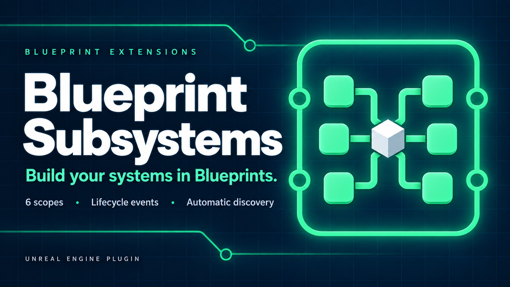

Blueprint Subsystems lets you create shared systems entirely in Blueprint. Use one to keep quest progress between level changes, manage events in a world or store data for each local player.
A subsystem holds data and logic. Unreal Engine creates and removes it when needed. Other Blueprints access it through a Get Subsystem node. You do not need to place a manager actor in a map.
The plugin supports Engine, Editor, Game Instance, World, Tickable World and Local Player subsystems. It finds your subsystem Blueprints and includes them when packaging the game. Editor subsystems are available only in the editor.
To build on a subsystem Blueprint you already have, pick it under All Classes instead. Each subsystem Blueprint is listed there under the type it extends.
With automatic discovery enabled, the plugin finds saved subsystem Blueprints and registers them with the engine. Restart the editor after changing discovery settings that require a restart.
A subsystem's scope decides how many instances exist and how long each one lasts. Choose the scope that matches the data and logic you want to keep.
| Scope | Instances | Lifetime and common uses |
|---|---|---|
| Engine | One per running engine process | Shared services that continue across worlds and Play In Editor sessions. |
| Editor | One per editor session | Editor tools and project checks. Available only in the editor. |
| Game Instance | One per game instance | Data for a game session, including across level changes. Useful for quest progress or matchmaking. |
| World | One per supported world | Data and logic for that world, such as a level event manager. |
| Tickable World | One per supported world | A World subsystem with a Blueprint Tick event. |
| Local Player | One per local player | Separate data for each local player, such as input or HUD state. Continues across level changes. |
Choose Blueprint Engine Subsystem for a system that needs to continue when worlds or game instances change. It has no world of its own. Use a World subsystem for actors and other objects that belong to one level.
Choose Blueprint Editor Subsystem for editor tools and project checks. It does not exist in a packaged game, so use it only from editor code and editor Blueprints.
Choose Blueprint Game Instance Subsystem for data that lasts for one game session. It remains available between level changes and can access its owning Game Instance.
Each Play In Editor run gets a new instance, so data from one run does not carry into the next.
Choose Blueprint World Subsystem for a system that belongs to one world. The engine creates an instance for each supported world and removes it when that world ends.
Blueprint Tickable World Subsystem also provides a Tick event. Its settings control whether it updates in editor worlds and while the game is paused.
Use Supported World Types in the Blueprint defaults to choose where it runs. For a gameplay system, you will usually exclude Editor and Preview worlds.
Use the regular World type if the system only responds to events and does not need Tick.
Choose Blueprint Local Player Subsystem for separate data and logic for each local player. A split-screen game has one instance per local player. A dedicated server has none.
The instance remains available when the player's controller changes or the player changes levels.
Lifecycle events tell your subsystem when to start and stop its work:
Some events are available only for certain subsystem types:
During a level change, Player Controller Changed may first receive no controller and later receive the new controller. Check that the controller is valid before using it.
Use Initialize Dependency inside Initialize if your subsystem needs another subsystem to be ready first. Both must have the same scope. The other subsystem initializes before your Initialize continues.
The order in which classes are found does not guarantee their initialization order. If you only need the other subsystem later, get it when you need it.
Automatic discovery finds subsystem Blueprint classes and registers them with Unreal Engine. It also includes their assets when packaging the game, even when no other asset references them.
The plugin includes only subsystem Blueprints and the assets they use. A level that your game opens only by name must still be listed in the packaging settings. See A level opened by name is missing from a build.
Open Project Settings > Plugins > Blueprint Subsystems:
/Game/Subsystems. Leave it empty to search all available content folders, including plugin content.Restart the editor after changing options marked as requiring a restart.
You can also control registration while the game runs. Use these nodes under Blueprint Subsystems for downloadable content, systems used by a specific game mode, or projects with automatic discovery disabled.
If you unregister a subsystem, make sure any Blueprint that uses it can handle the instance being unavailable.
Engine and Editor subsystems can remain active for the entire editor session. Enable Reinitialize On Blueprint Compile to apply their updated graphs after a compile.
The plugin runs Deinitialize on the affected instances and creates new ones, which run Initialize. Data held only in the old instances is lost.
This refresh is skipped during Play In Editor. Disable the option if you need to keep data in the current editor instances while editing.
These examples show which subsystem to choose and where to put your logic.
Create a Blueprint Game Instance Subsystem and store your session data in it. Set it up in Initialize and read it from each world through its Get node.
A World subsystem is recreated when its world changes, so use Game Instance for data that must continue between levels.
Create a Blueprint Local Player Subsystem. Each local player gets a separate instance.
Use Player Controller Changed to update controller references. A level change may replace the controller.
Create a Blueprint Editor Subsystem. Bind to editor events in Initialize and unbind them in Deinitialize. Keep references to this class in editor tools, outside runtime gameplay graphs.
Check that automatic discovery can find the Blueprint or add it to Additional Subsystem Classes. If Search Paths contains folders, the asset must be in one of them unless listed separately.
Build with the source plugin. Copying only binaries generated by the editor is not enough for other build targets.
Unreal Engine packages the maps listed in Project Settings > Packaging > List of maps to include in a packaged build, the default maps from Maps & Modes, and everything those maps use. Open Level (by Name) names a level without referencing it, so that level is packaged only when it is listed.
With an empty list, the engine packages all project content instead, but only when nothing asks for specific content. In Unreal Engine 5.6 to 5.8, the NNEDenoiser plugin is enabled by default and asks for its own content, so most projects never reach that step. Blueprint Subsystems includes your subsystems without such a request. Version 1.0.1 and earlier made one, which skipped that step in every project with a subsystem Blueprint.
To package the level, do one of the following:
For other content that your game loads only by name or path, add its folder to Additional Asset Directories to Cook, or enable Cook everything in the project content directory (ignore list of maps below).
Check that the Get node uses the correct scope and owner. Then check Should Create Subsystem and Supported World Types.
A Local Player subsystem needs a local player; dedicated servers have none. An Editor subsystem is available only in the editor.
Call Initialize Dependency from Initialize when both subsystems have the same scope.
For a World subsystem that can wait until all world subsystems are ready, put the work in Post Initialize.
Reinitialize On Blueprint Compile replaces the old instance with a new one. Disable the option to keep the current instance, or store data that must survive elsewhere.
Check Tick Enabled, Is Tick Enabled, Supported World Types and Tick In Editor. To update while the game is paused, also enable Tick When Paused.
For help or bug reports, contact tomasz.klin@gmail.com.
Include your Unreal Engine version, plugin version, subsystem scope and world type. This manual covers plugin version 1.0.2.